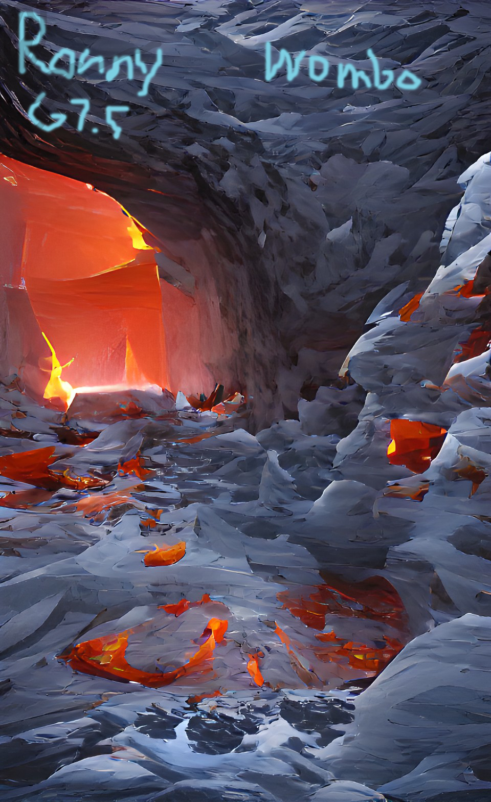
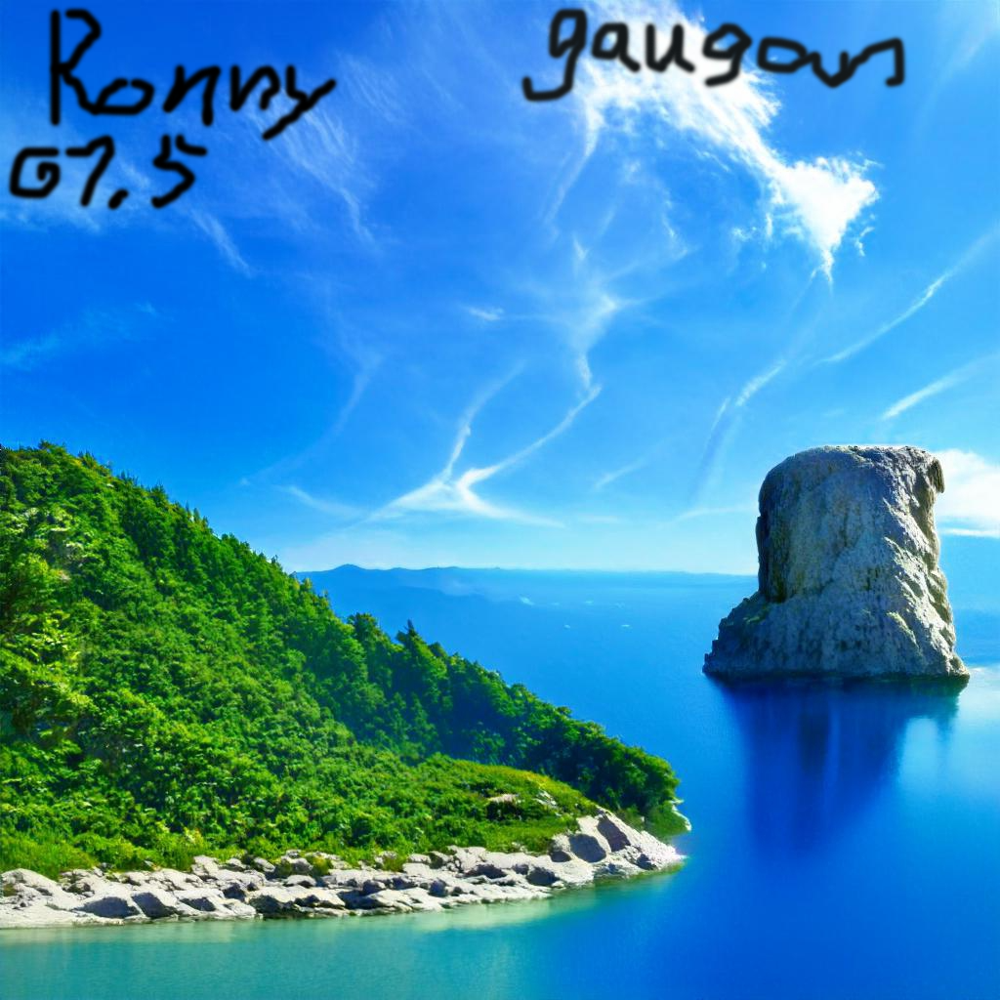

AI Painter
AI painter1:gaugan
Gaugan is an AI painter that is to "brush" materials like building,ground and landscapes on the picture you want to build.After you make a picture,the AI will try to connect all the material together into an amazing view.
AI painter2:wombo
Wombo is an AI painter that can turn texts into picture base on different art styles.
Gaugan picture introduction:I use tje materials such as mountian,rock,tree,water and cloud to make this picture.
Wombo picture introduction:Text:"An ice pit cave with lava in it.""
